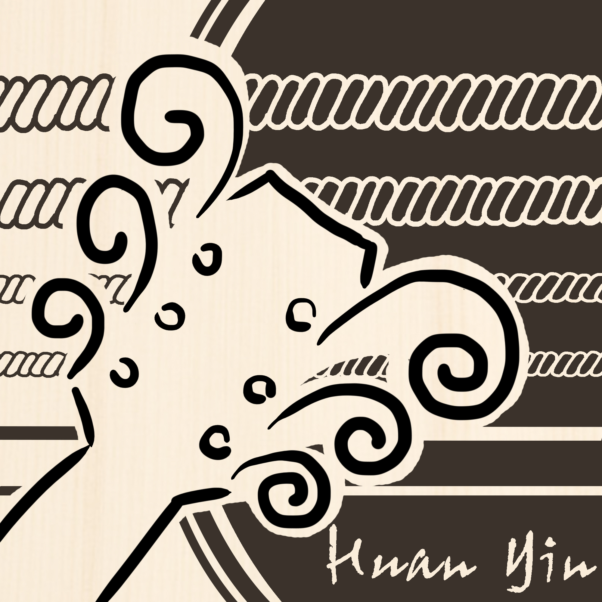

弦吟指板筆記
Singing Fretboard Notes
查和弦按法
目前只支援標準調弦。
看不懂這個和弦名稱
{{ lk.pen }}
{{ l.t }}
{{ g.t }}
{{ g.t }}
找不到這個和弦的按法
回報這個和弦
{{ d.t }}
{{ lk.frLabel }}
{{ lkCount }}
整頁設定
左手指法
顯示根音
音名級數
選取和弦點選和弦以進入編輯
編輯圓點點選格子以新增或移除圓點
封閉和弦按住圓點並滑過其他弦
指法長按圓點以設定指法
空弦點選左側以切換 O／×
排序按住已選取和弦的空白處並拖移
「多選」鍵啟用後點選和弦以加入或取消，可整組拖移
選取和弦點擊和弦開始編輯
放圓點點擊格子輸入／刪除
封閉和弦同一格上下拖曳
指法圓點按右鍵，或按 1～4、T
空弦點左側切換 O／×
位置整個和弦上下移
排順序拖曳和弦名稱
多選空白處拖曳框選
快捷鍵Delete 刪除 ⌘D 複製 ⌘A 全選 ⌘Z 上一步
© 2026 弦吟 Singing in String · 劉桓吟 HuanYin使用條款
Singing Chord
{{ d.t }}
{{ c.frLabel }}
編輯和弦
左手指法
顯示根音
音名級數
名稱
註解
位置
格數
左手指法
顯示根音
音名級數
指法
調弦
檔案
專案檔（.json）
匯出圖片
選擇要匯出的和弦
{{ pickCount }}
預覽
{{ pvDim }}
匯出方式
檔案格式
尺寸
背景
排版
每個和弦存成一張圖，不放標題、Logo、註解。選兩個以上會打包成一個 zip 檔。
一排
匯出預覽
{{ preview.dim }}
{{ preview.hint }}
和弦庫
Library
{{ libSelLabel }}
{{ confirmTitle }}
{{ confirmMsg }}
開新專案
指板和和弦是同一個專案。要清空哪些？
{{ toast.msg }}
{{ bubPre }}{{ bubName }}{{ bubPost }}
{{ subToast }}
使用條款